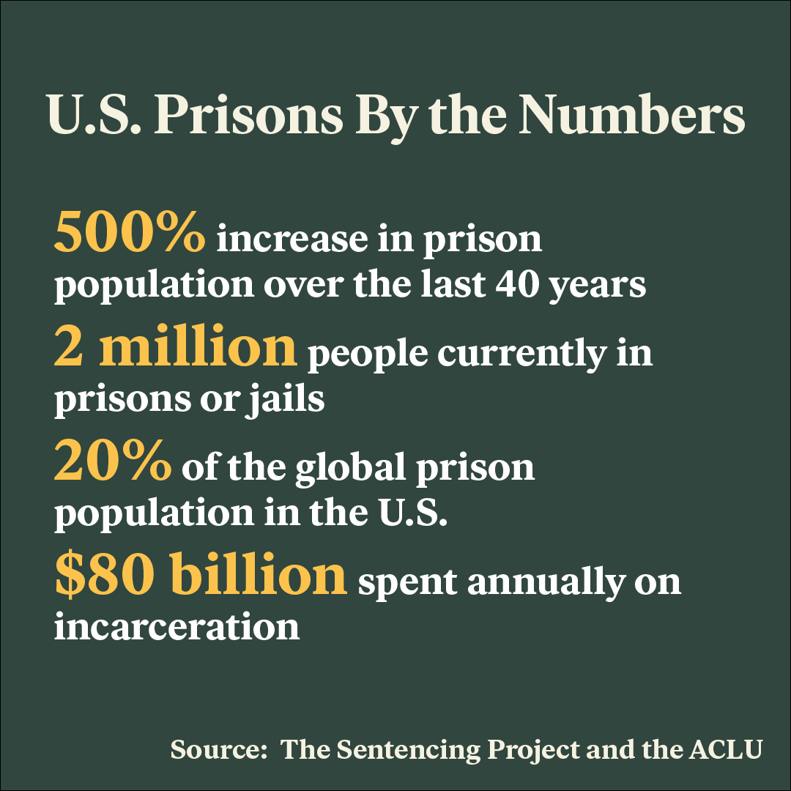

The reality of implementing restorative justice across the country
Restorative justice programs can be successful alternatives to imprisonment, but experts argue there is a long way to go before the practice becomes a large-scale solution.
Thalia González wants to shut down the prison system. She is also a law professor. Like many restorative justice advocates, she grapples with a tension inherent to every social movement: how do you work within an existing system while pushing for a reimagined future?
“I'm an abolitionist,” says González. She teaches at the University of California San Francisco. “But I also know that tomorrow a young person is going to stand up in court. If they could have a restorative option as opposed to not, I want that option to be available.”
González discovered restorative justice while studying law at Northwestern University. As a student, she worked as a circle practitioner, leading discussions between offenders and victims at a juvenile detention facility in Chicago. Since then, she has become a leading expert in the field and has conducted extensive research on the opportunities and limitations of restorative justice, both domestically and abroad.
DEFINITION: CIRCLE PRACTITIONER
While advocates like González argue that restorative justice is not some sort of cure-all, they do believe it can chip away at the American prison-industrial complex. From non-violent drug offenses to homicide, the United States has one broad tool to address crime: incarceration.

Even victims of crime are not satisfied with incarceration as a tool to address the harms done to them. Between 2006 and 2019, 52% of all violent crimes were left unreported to the police.
AUDIO:
“If you think about the way our criminal legal system currently works, there is little to no room within the structure of a court case for the victims,” says Susan Maze-Rothstein, the executive director of the Center for Restorative Justice at Suffolk University. “They are relegated to the role of witness. And so, arguably, what we are doing currently is more retraumatizing because people are left with their harm and their pain.”
The growth of restorative justice
The need for alternative responses to crime, along with promising studies on the effectiveness of restorative justice in lowering recidivism rates, has led to increased federal funding and a growth of restorative justice programs across the country in settings such as schools and prisons.
Last year, the U.S. Department of Justice announced it would award almost $57 million to support criminal justice reform programs and advance racial equity within the criminal justice system. From that budget, $8 million went toward promoting restorative justice programs and other similar approaches. Experts from all over the country continue to meet and share ideas and insights from their work.
Still, advocates point to the lack of a national framework around what qualifies as restorative justice or how it should be used as a significant weakness.
“We don't even have a comprehensive map of how many prosecutors and officers are using restorative justice,” says González. “It's hard to know what you know when you don't know what the hell's going on.”
Mapping the current landscape
Our restorative justice statutes data was obtained from research published by Thalia González in 2020. Our team checked each statute included in the data to remove any that have been repealed since the data was originally published. We did not attempt to find new restorative justice statutes that have passed since González’s research, meaning that our current dataset is likely undercounting the true number of restorative justice statutes across the country.
A shift toward accountability and healing
AUDIO “We are in a place right now where our system is very punitive and has very high sentences,” says Adriaan Lanni, the Touroff-Glueck Professor of Law at Harvard University. “That has created an expectation among people that the only way to take harm seriously is to have a very high sentence …. You have to get over this assumption that people have that a restorative process is somehow not taking it seriously. Restorative justice can really get at true accountability in a way that the regular criminal process of incarceration does not.”
In Vermont, a series of restorative justice programs called Circles of Support and Accountability (CoSA) have been used to reintegrate high-risk offenders for the past 20 years. Studies show offenders who participated in these programs were less likely to commit new crimes. Researchers have also found that juvenile offenders who participate in victim-offender mediation programs reoffended at lower rates.
Despite successes, growing pains persist
“There’s a huge issue of equal access to restorative justice and equity in particular,” says Lanni. “One [question] is whether or not all . . . communities should have access to restorative justice. Ideally, you don’t want a kind of discretionary system where it’s just up in the air, but you want to have a very clear criteria for when people are given the option of taking a restorative process.”
At the moment, these programs are rare and only accessible to a fraction of offenders. Experts like Lindsey Pointer, an assistant professor at Vermont Law and Graduate School and the Principal Investigator of the National Center on Restorative Justice, say that giving judges and police officers final say over who qualifies to participate in restorative justice creates room for bias based on the offender’s race, gender, type of crime and criminal history.
“We have something that's shown a lot of promise in terms of reforming the system, but we run a significant risk if we have these referral structures that could be replicating the same bias that we see elsewhere,” says Pointer. “We could end up actually exacerbating the differences in outcomes for people if we're only having young white people from affluent backgrounds being referred, for example.”
“In the U.S., our attachment to a racial capitalist society has been adherent to incarcerating Black and Brown folks for centuries,” says González. “This isn't new business. [restorative justice] isn't going to solve that.”
Beyond the criminal justice system
Restorative justice was not originally linked to crime. Modern-day restorative justice practices have their roots in indigenous practices, drawing inspiration from indigenous New Zealander and Native American traditions. In a process called “peacemaking,” indigenous communities often resolved disputes by focusing on repairing relationships and finding solutions instead of assigning blame and rendering punishment.
When Howard Zehr, a pioneering advocate of restorative justice, began his work advocating for restorative justice in the late 1970s, restorative justice primarily addressed problems in the criminal justice system. As the movement has grown, it has also been used in settings like the National Museum of American History and South Africa’s Truth and Reconciliation Commission, highlighting its utility in building and restoring relationships.
"[Restorative justice] started because we were trying to address problems in the deficiencies of the criminal legal system," says Zehr. "But then, we and especially others began to take in other arenas like historical harms [outside of] a legal context. I'd always hoped this would happen and so I'm just really pleased that new generations have found ways to articulate it and apply in other other contexts."
Barriers remain, but advocates are optimistic
Garnering widespread support for restorative justice is still elusive. Underlying its difficult adaptation into the broader criminal justice system is what Pointer calls a “public imagination problem.”
“That is the hurdle [that] we need to get over, in terms of just expanding what that word ‘justice’ can mean for people,” says Pointer. “So, can ‘justice’ mean understanding impact and repairing harm? Can ‘justice’ mean transforming the structural and equity characteristics that led to the need that fueled the behavior that caused harm in the first place? Once we're past that hurdle, once that public imagination is expanded, then I think we would be able to do something like what New Zealand, for example, has done, where restorative justice is a default option.”
New Zealand has one of the most comprehensive national restorative justice systems in the world, according to Zehr. But even their framework does not fully incorporate it into the justice system. Outlining what a national restorative justice system could look like is a barrier for the movement, Zehr said.
When Pointer introduces restorative justice to people, she said they are often quick to dismiss it as a utopian idea.
“I get that,” said Pointer. “But I just try to help people see [the] common human need, [the] common human experience in the wake of crime. And then it's less utopian, it's less idealistic about people and it's more just actually responsive to the needs [of the harmed party].”
Expanding that public imagination is a slow process. But the growth of restorative justice in recent years demonstrates it is a possibility.